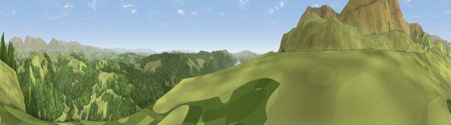

Viewpoint near Coniston
#2032 in England · top 16% of its area beats it · near ConistonWhere it is
The exact computed spot (SD 30800 99312). Click the marker for map links.
The view, rendered

A 360° render of this exact spot computed from the terrain model, tree cover and land cover — summer colours, afternoon light, calibrated against photographs of famous viewpoints. Real trees, hedges and buildings will differ in detail.
The panorama
Grey silhouette: terrain skyline in each direction (720 bearings, Earth curvature and refraction included). Dashed green: skyline with trees (+15 m) and buildings (+8 m) as obstacles. Blue strip: how far the ground is visible on each bearing.
Where the view opens
Wedge length = distance to the farthest visible ground on that bearing (vegetation-aware). Rings at 10, 25 and 50 km.
What fills the view
61% grassland · 37% woodland · 1% water
Angular shares of the visible panorama (visual magnitude), not map area. Landscape diversity 0.32 (0–1 Shannon).
Key numbers
More beautiful places nearby
The staircase of upgrades: each row has a higher view potential than everything closer. Driving times are estimates from straight-line distance, calibrated against real road routing — check an actual route before setting out.
| Place | Direction | Drive | Score |
|---|---|---|---|
| Viewpoint near Coniston | WSW · 1 km | ~3 min | 81.4 |
| Viewpoint near Coniston | WNW · 2 km | ~5 min | 82.2 |
| Wetherlam | NW · 3 km | ~7 min | 82.3 |
| Viewpoint near Coniston | WNW · 4 km | ~9 min | 82.8 |
| Brim Fell | WSW · 4 km | ~9 min | 83.9 |
| Old Man of Coniston | WSW · 4 km | ~9 min | 85.2 |
| Viewpoint near Finsthwaite | SE · 14 km | ~25 min | 90.3 |
| The Knoll | S · 412 km | ~392 min | 91.0 |
54.38458, -3.06703 · source: screening · position refined by local search. Computed location — check access rights before visiting.